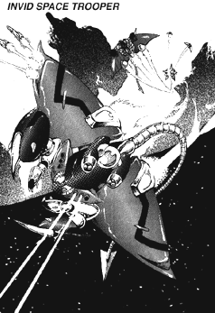

The following material is from
THE THIRD INVID
WAR, a fan supplement by
Dave Deitrich and
Chris
Meadows. Please feel free to use, copy, and distribute
it as you see fit. All we ask is that you give proper credit to us and do not
claim that it is your own work. Comments and suggestions are welcome.
THE INVID SPACE TROOPER
BACKGROUND

The Invid Space Trooper was the hardest of the new Invid designs to
analyze during the Third Invid War. The reason for this was simple;
pilots who encountered the new mecha seldom lived to report their
observations. Long range sensors had revealed that the Invid had a new
space mecha as early as mid-2042, but data on the new design was sketchy
at best. It was not until the summer of 2043 when the new
VAF-8R Reconnaissance Veritechs began to arrive
on Earth that the Resistance was finally able to get some hard data on
the Space Trooper.
In its element, the Invid Space Trooper is a deadly design almost
without peer. The basic design for the mecha is large and flat, and
laid out much like a Manta Ray, or "Devilfish". There are two large
wings on either side of the main body, which can fold up to 80 degrees
up or down in order to adjust the center of gravity for the mecha; a
very important ability in zero-gee combat which allows for tight-radius
turns. There is also a long, thin tail extending behind the main body
of the mecha, ending in a sharp barb. This tail is fully dexterous and
can actually strike at mecha around the Trooper, like a scorpion. There
are also two arms on the front of the mecha that end in a LARGE claw,
designed especially for melee combat. Each hand also has a smaller claw
for use in grappling. The Space Trooper does have six small insect-like
feet underneath the main body, but these are normally retracted when in
flight. The legs are very thin and small, and end in points instead of
actual feet, making the mecha very poor at walking and jumping.
However, the legs are very strong and the feet have retractable barbs,
which make them perfect for digging into enemy spacecraft and holding
the mecha in place. In combat with smaller starships and shuttles, the
Space Trooper will often attach itself to the hull of the ship, and then
use its claws, tail, and energy weapons to literally rip the shuttle
apart.
The firepower of this new mecha is equally as deadly as its hand-to-hand
abilities. The main armament of the mecha is a pair of Heavy Plasma
Cannons, identical to those on the new Combat Trooper design. These
cannons are mounted on either side of a small rotating turret on the
back of the mecha. This gives the cannons a superior firing arc, as
they can rotate 360 degrees around the mecha. The secondary armament of
the Space Trooper is a set of SIX mini plasma weapons; three on either
side of the sensor eye. These cannons are likewise very similar to
those on the Combat Trooper. Also, there are two small missile
launchers, one on the front of each wing. These missile launchers are
normally retracted into the wings when not in use, and pop up when ready
to fire. Each launcher can fire 5 missiles at once and can hold 15
missiles total (including reloads). Finally, there is a high powered
laser on the tip of the tail of the mecha. While not really suited to
combat, this cutting laser is perfect for the Space Trooper's favorite
tactic of cutting open spacecraft and larger mecha.
Perhaps the most impressive features of this new enemy mecha is the
propulsion system. There are actually THREE main engines on the Space
Trooper. The largest is mounted on the belly of the mecha, between the
legs and just in front of the joint where the tail meets the main body.
There are also two only slightly less powerful engines; one on each wing
of the mecha. By varying the thrust of these three engines and
combining them with wing movements, the Space Trooper can make sharp
turns even at high speeds. There are also banks of maneuvering
thrusters located all over the body of the mecha (mostly in the wings)
which help to give the Space Trooper superior mobility.
An intriguing weakness about this new mecha is that some of the same
features that make the Space Trooper a superior space combatant greatly
decrease its performance in a planetary atmosphere. The turret, claws,
and tail create so much aerodynamic drag that the mecha's airspeed is
greatly decreased in atmosphere. Plus the engines of the mecha are
designed such that the Trooper CANNOT hover in gravity greater than 0.5
G. The legs of the mecha are poorly designed for movement on land, and
the mecha's movement is greatly slowed by Earth's high gravity (compared
to outer space). It is probably for this reason that Space Troopers
RARELY venture below the highest layers of Earth's atmosphere. There
have been documented incidents where REF pilots have escaped pursuit by
Space Troopers by rapidly diving into the atmosphere. 4 out of 5 times
the Space Troopers will break off rather than risk being caught in
Earth's atmosphere.
Space Troopers rarely operate alone. They are usually encountered in
groups of 5 or more, and are often accompanied by either Attack Scouts
or Armored Scouts with space boosters. REF pilots and resistance
fighters are warned to avoid contact with Space Troopers whenever
possible.
SCHEMATICS
 Click on the icon to the left to view the schematics of the Space Trooper,
based on data collected by REF Intelligence.
Click on the icon to the left to view the schematics of the Space Trooper,
based on data collected by REF Intelligence.
RPG STATS
Invid Name: "Varrab"; REF Nickname: "Devilfish"
Vehicle Type: Space Combat Unit
Crew: One; Stage Two Invid Pilot
M.D.C. BY LOCATION
Large Claws (1 per Forearm) 75 each
Small Claws (1 per Forearm) 25 each
Forearms (2) 150 each
Upper Arms (2) 75 each
* Legs & Feet (6) 50 each
Main Engine Thruster (lower rear) 100
Wings/Secondary Thrusters (2) 120 each
Tail 75
Tail Laser 50
Heavy Plasma Cannons (2) 150 each
** Plasma Cannon Turret 100
SRM Launchers (1 per wing) 100
*** Pulse Beam Cannons (6) 20 each
**** Sensor Eye 25
***** Main Body 240
Pilot's Compartment 100
Notes:
- *
- The legs of the Space Trooper can retract into the main body.
When they are retracted they are effectively immune from attack;
attackers must destroy the main body to get at them.
- **
- Destroying the Plasma Cannon Turret will disable both Plasma
Cannons. However, the turret is a difficult target to hit (being
low on the back and between both cannons); -3 penalty.
- ***
- The pulse beam cannons are slightly difficult to hit; -2 penalty.
- ****
- The sensor eye is the most vulnerable place on the Invid's mecha
body. Destruction of the sensor eye will kill/destroy the mecha
and pilot (goes right through crew compartment). However, it is a
small target protected by surrounding shielding, thus, to hit it
the player/character must make a called shot and is at -3 to
strike.
- *****
- Depleting the M.D.C. of the main body will shut the mecha down
completely. Depleting the pilot compartment M.D.C. will blow the
Invid to pieces.
SPECIFICATIONS
- Flight:
- Can accelerate up to a maximum speed of 5360 mph (Mach 8)
outside of an atmosphere. However, due to its poor
aerodynamic design the maximum speed drops to 2010 mph (Mach 3)
in an atmosphere. Also, the Space Trooper CANNOT HOVER while
in an atmosphere; minimum airspeed to remain aloft is 200 mph
(320 kmph).
NOTE: I KNOW there's no such thing as a "maximum speed" in space.
This junk was added to make the mecha fully compatible with the
Robotech RPG. If you have a vector-based space combat system that
can use thrust instead of velocity, then by all means please ignore
these stats.
- Thrust:
- [To be calculated]
- Running:
- 20 mph (32 kmph). Rarely runs.
- Jumping:
- 10 ft (3 m) up or across. Rarely jumps.
- Height:
- 16 ft (4.8 m) with legs extended. 10 ft (3 m) with legs
retracted.
- Width:
- 25.5 ft (7.8 m) with "wings" fully extended.
- Length:
- 40 ft (12 m)
- Weight:
- 25 tons fully loaded.
- Cargo:
- Can carry up to 6 tons (in Earth gravity).
- Abilities:
- Pilot Mecha - 75%
- Recognize Human Machinery - 50%
- Navigation: Space - 85%
- Prowl - 45%
- Detect Ambush - 45%
- Detect Concealment - 45%
- Track - 55%
WEAPON SYSTEMS
- HEAVY PLASMA CANNONS. These large plasma cannons are updated
versions of those originally found on the old Invid Shock Trooper.
However, they are much more powerful and have a far greater range
than the older models. The cannons are mounted on a "turret" on the
back of the mecha, which allow them to rotate 80 degrees up, 40
degrees down, or 360 degrees around the unit. Both cannons can fire
independently or simultaneously. The plasma energy is still released
in Frisbee-like "annihilation discs," just like the older models.
- Primary Purpose: Assault
- Secondary Purpose: Anti-Space Fighter
- Range: 6000 ft (1800 m)
- Damage: One single blast does 4D6 M.D., dual blasts do 8D6 M.D. and
simultaneous bursts do 2D4x10 M.D. A continuous stream, lasting
one full melee and directed at a single target, does 3D6x10 M.D.!!
A strafing run (wild shooting) does 4D6 M.D. per hit.
- Rate of Fire: Five attacks per melee. Dual blasts and bursts both
count as ONE attack.
- Payload: Unlimited
- Bonuses to Strike: Protoculture targeting bonuses only.
- Note: the mouths of the plasma cannons glow white just before they
fire, just like their predecessors.
- PULSE BEAM CANNONS. Six small Invid beam cannons are mounted in the
main body of the mecha, three on either side of the sensor eye. The
weapons can rotate to a maximum of 30 degrees in any direction. All
six cannons can fire in unison or independently of one another.
- Primary Purpose: Defense
- Secondary Purpose: Close-range assault
- Range: 3000 ft (900 m)
- Damage: One single blast (rare) does 2D6 M.D., dual blasts
(simultaneous shots, same target) do 4D6 M.D., quad blasts (all
four cannons aimed at same target) do 6D6 M.D, and sextuple blasts
(all six at one target) do 8D6 M.D. A six-cannon burst (18
blasts, all at same target) does 1D6x10+10 M.D.
- Rate of Fire: Five attacks per melee. Dual, quad, and sextuple
blasts and bursts count as ONE attack.
- Payload: Unlimited
- Bonuses to Strike: +1 to strike, plus protoculture targeting bonuses.
- SRM MISSILE LAUNCHER. A small missile launcher is built into each
wing of the mecha, near the front. They are normally recessed into
the mecha, and pop out to fire.
- Primary Purpose: Assault
- Secondary Purpose: Anti-Space Fighter
- Missile Type: Almost always Plasma SRMs.
- Range: 5 miles (8 km)
- Mega-Damage: 1D6x10 M.D.
- Rate of Fire: One at a time or in volleys of 2, 4, 6, 8, or 10
missiles. Can only fire a maximum of 10 missiles at a time (each
launcher can only fire 5 missiles at a time).
- Payload: 30 missiles.
- Bonuses to Strike: +3 to strike (but no protoculture bonuses)
- TAIL LASER. The Invid Space Trooper has a high-powered laser mounted
on the tail. However, the laser seems to be designed more for
cutting than as an offensive weapon. In combat, the Space Trooper
will often attach itself to a mecha or the hull of a starship with
its legs and then used the tail laser to literally cut into its prey.
The laser is powerful enough to cut through starship hull in less
than 30 seconds (2 melee rounds).
- Primary Purpose: Demolition/Sabotage
- Secondary Purpose: Close-range defense
- Range: 1000 ft (300 m)
- Damage: Quick shot (less than a full melee) does only 2D4 M.D.
However, a continuous beam against a non-moving or immobilized
target can do as much as 2D4x10 M.D. per melee round (!!).
- Rate of Fire: The Space Trooper can fire the laser continuously
without need to stop. However, for game purposes the laser is
limited to 5 attacks per round against a moving target.
- Payload: Unlimited
- Bonuses to Strike: Protoculture targeting bonuses only.
- HAND-TO-HAND COMBAT. The Space Trooper has been specially designed
to do lots of damage in hand-to-hand combat. This fact combined with
its high speed make it a deadly combatant in space. However, in an
atmosphere the Space Trooper is a mediocre combatant.
- Attacks Per Melee: Five (Three in Atmosphere)
- Hand to Hand Bonuses IN SPACE : +4 to strike, +5 to parry, +5
automatic dodge when flying at any speed (an automatic dodge works
like a parry and does not forfeit an attack), +4 to roll with a
punch, fall, or impact.
- Hand to Hand Bonuses IN ATMOSPHERE : No bonus to strike, +2 to parry,
no bonus to dodge on the ground, +3 to dodge when in flight, +1 to
roll with a punch, fall, or impact.
- Types of Attacks: Punch/Claw: 6D6 M.D.
Crush with Pincer: 2D6 M.D. per melee round.
Full Body Crush: (Trooper grapples target in a bear hug while
the smaller claws and barbed legs attack the victim) 4D6
M.D. per melee round. A variation is the "Scorpion Strike"
in which the Space Trooper attacks with its tail while
grappling the opponent. 1D6x10 M.D. per round.
High-Speed Claw: (Trooper swipes at target with large claw
while passing at high speed) 1D6x10 M.D., counts as two
attacks.
Body Block/Ram: 6D6 M.D., counts as two attacks.
Stomp: 3D6 M.D. from barbed legs.
This document was originally converted to HTML by
Joshua Megerman
megermjs@newton.physics.drexel.edu
st92bb10@post.drexel.edu